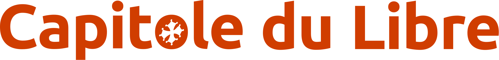

Beaucoup d’informations présentées ici sont du domaine légal et spécifiques à la France.
Francophones d’autres pays, renseignez-vous !
Nos fils rouges pour cette présentation
Éditent des littératures de l’imaginaire pour tout le monde.
Les livres sont sous licence libre (CC BY ou CC BY-SA) et disponibles en librairie, en versions papier et électroniques.
Tous les détails sur https://renardspatial.com/
Zeste de Savoir est une association à but non lucratif dont le but est de
promouvoir le partage de connaissances à travers des
ressources pédagogiques gratuites et de préférence sous licence libre
.
Fondée en 2014 par des anciens du Site du Zéro, elle édite le site https://zestedesavoir.com.
Zeste de Savoir est un fork « conceptuel » de feu le Site du Zéro.
Le logiciel du site est un fork du site de Progdupeupl.
Les billets sont un fork « conceptuel » des journaux de linuxfr.org.
On a conservé la validation des articles et tutoriels.
Une publication validée est relue, corrigée, retravaillée, et améliorée, par l’auteur·ice et un·e « validateur·ice » de l’équipe de Zeste de Savoir.
Elle n’est publiée qu’après validation.
… Ça ne ressemblerait pas à un travail d’édition, tout ce bazar ?
C’est le rendre :
Mais aussi…
Éditer un texte, c’est aussi :
… mais alors…
Révélation !
Et on est même éditeurs depuis le début !
Alors, on s’est dit qu’on allait officialiser ça.
Et on a commencé à creuser ce que ça impliquait.
C’était à la fois plus compliqué et plus simple que prévu…
Et pourquoi, ou non, les mettre en place
Il identifie une publication en série (journaux, revues…).
Il suffit de remplir les conditions puis de le demander auprès de la BnF. C’est gratuit !
Le site https://zestedesavoir.com possède un ISSN : 3132-1135
(le site, et pas l’association).
Les Éditions du Renard Spatial ne publient pas en série donc n’en ont pas.
Il identifie une édition d’un livre au sens large (papier, livre électronique, sous forme de pages web…).
En France, c’est géré par l’AFNIL ; le service est payant avec un tarif par série d’ISBN — soyez prévoyants !
Pour Zeste de Savoir, il pourrait servir à identifier chaque édition de chaque publication éditorialisée, ce qui faciliterait leur référencement.
Il est facultatif, mais nécessaire au référencement en librairie.
Identifie des resources numériques stables, comme des articles scientifiques, jeux de données, auteurs…
C’est l’idéal si on désire que les publications soient référencées dans des bibliographies…
… mais ils impliquent des contraintes et conditions drastiques pour leur génération et un cout de fonctionnement élevé.
Parce que ça serait trop simple sans elles !
C’est très simple : il suffit de suivre les démarches listées ici.
Concrètement, il suffit :
C’est la personne physique qui est responsable de la publication devant la loi.
Le directeur de la publication est civilement et pénalement responsable de l'ensemble de la publication et de son contenu, en cas de poursuites exercées pour « délits de presse » : publication de nouvelles interdites ou fausses, diffamation, injure, etc.
Est éditeur qui veut, il suffit de remplir les conditions légales et de l’annoncer.
L’entreprise doit avoir le code NAF adéquat
(exemple :
58.11Z pour l’édition de livres).
Tout document « mis en nombre à la disposition du public »
est soumis au dépôt légal.
Ce dépôt légal est obligatoire et s’applique aussi pour les ouvrages gratuits.
L’ISBN est facultatif pour le dépôt légal.
Les formalités ne concernent que les éditions physiques, la BnF collecte automatiquement les versions électroniques.
D’accord, c’est bien beau tout ça, mais il reste une question…
La question ne se posait pas aux Éditions du Renard Spatial.
Chez Zeste de Savoir, on a identifié trois réponses à cette question.
« Valider un tutoriel ou un article »
, c’est le terme historique, mais que personne ne maitrisait.
« Éditer une publication »
a un sens précis et (relativement) bien connu.
Tout le monde gagne du temps.
Les communications sont plus claires.
« Publier un article dans une revue » c’est plus prestigieux que « écrire sur un site web ».
Et le prestige, ça compte dans la motivation des auteur·ices !
« Éditer pour une revue », c’est plus flatteur que « corriger pour un site web ».
La motivation des éditeur·ices compte aussi, surtout les bénévoles !
Le travail de l’auteur n’est plus présent sur Internet, il est référencé parmi ses pairs.
Ces références permettent d’être trouvé en bibliothèque et cité en bibliographie.
N’importe qui peut être légalement éditeur, à condition d’avoir un directeur de la publication.
L’ISSN identifie une publication en série, l’ISBN identifie une édition d’un ouvrage.
Se déclarer « éditeur » sert à clarifier les rôles et légitimer le travail des intervenants.
Se déclarer éditeur, c’est du travail humain à destination des humains.
En France, c’est simple, et pas cher¹.
Les processus eux-mêmes sont très humains !
Ne cherchez pas d’API REST¹ !
¹ … sauf si on veut des DOI !
SpaceFox (Les Éditions du Renard Spatial) – @spacefox spacefox.fr
Amaury Carrade – @amaurypi amaury.carrade.eu
Beaucoup d’informations se trouvent sur le site de la Bibliothèque Nationale de France (BnF) et de l’Agence francophone pour la Numérotation Internationale du Livre (AFNIL).